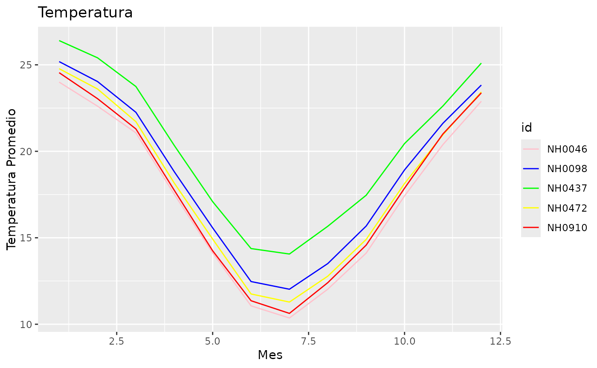

Creación de gráfico de temperatura promedio mensual por estación
Source:R/funcion_grafica_mensual.R
grafico_temperatura_mensual.RdLa función grafico_temperatura_mensual genera un gráfico de líneas que muestra la evolución de la temperatura promedio mensual agrupada por estaciones. El gráfico es altamente personalizable, permitiendo modificar los colores asignados a cada estación y el título del gráfico.
Arguments
- datos
Un
data.frameque contiene los datos a graficar. Debe incluir las columnasid,fechaytemperatura_abrigo_150cm.- colores
Un vector de colores personalizados para las líneas del gráfico. Si no se proporciona, se generarán colores aleatorios.
- titulo
Un string que especifica el título del gráfico. Por defecto es "Temperatura".
Value
Un objeto de clase ggplot que representa un gráfico de líneas con la temperatura promedio mensual para cada estación.
Details
Esta función procesa los datos ingresados para calcular la temperatura promedio mensual agrupada por estación (id). Los valores de temperatura se agrupan por mes y estación, se calcula el promedio mensual y se genera un gráfico de líneas. Si no se especifican colores, la función selecciona automáticamente colores aleatorios para las líneas del gráfico.
Las columnas requeridas en el data frame de entrada (datos) son:
id: Un identificador único para cada estación o grupo.fecha: Una columna de tipo fecha (Date) que indica la fecha de la medición.temperatura_abrigo_150cm: Una columna numérica que contiene los valores de temperatura.
Examples
colores_personalizados <- c("pink", "blue", "green", "yellow", "red")
grafico_temperatura_mensual(metadatos_completos, colores_personalizados, "Temperatura")
